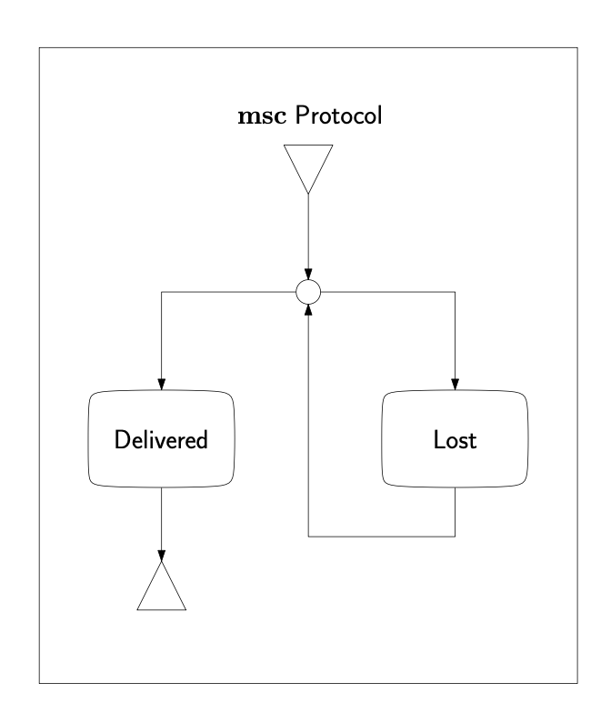
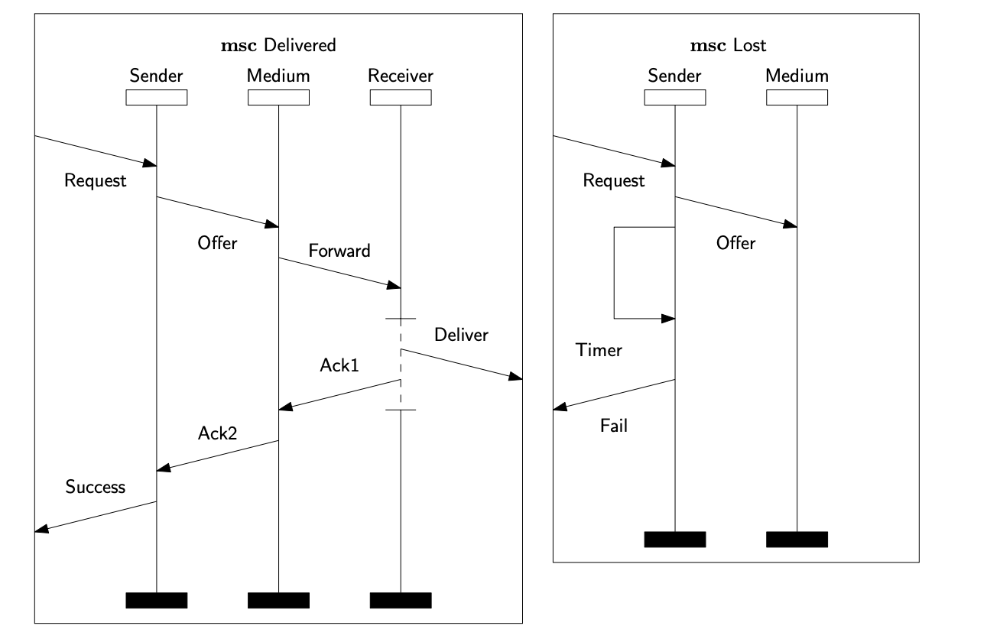
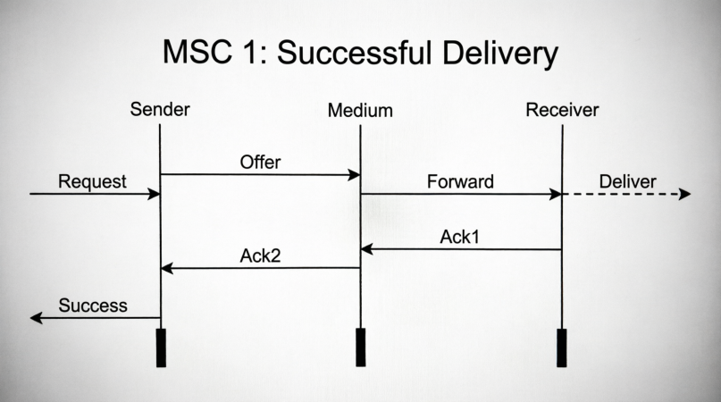
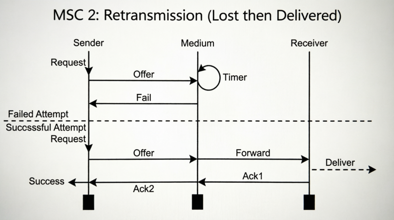

Annotations / Qwen 3.6 Plus - Thinking / Example 8.docx
Question: Consider the following High-Level Message Sequence Chart and its components represented in the attached two files. Generate two MSCs included in the semantics of the High-Level Message Sequence Chart.


Answer:
Based on the High-Level Message Sequence Chart (HMSC) and its components, here are two specific MSCs included in its semantics.
The HMSC describes a protocol with a choice: either the message is **Delivered** successfully, or it is **Lost** (triggering a loop/retry).
### MSC 1: Successful Delivery (First Attempt)
This MSC corresponds to the path in the HMSC where the "Delivered" component is chosen immediately. It represents a scenario where the message passes through the medium and reaches the receiver without issues.
**Participants:** Sender, Medium, Receiver
**Sequence of Events:**
1. **Request:** An external entity sends a `Request` to the **Sender**.
2. **Offer:** The **Sender** sends an `Offer` to the **Medium**.
3. **Forward:** The **Medium** sends a `Forward` message to the **Receiver**.
4. **Deliver:** The **Receiver** performs a `Deliver` action (sending the message to the upper layer/application).
5. **Ack1:** The **Receiver** sends an acknowledgment (`Ack1`) back to the **Medium**.
6. **Ack2:** The **Medium** sends an acknowledgment (`Ack2`) back to the **Sender**.
7. **Success:** The **Sender** reports `Success` to the external entity.
---
### MSC 2: Delivery after One Loss (Retransmission)
This MSC corresponds to the path in the HMSC where the "Lost" component is executed first, the process loops back to the start, and then the "Delivered" component is executed. It represents a scenario where the first attempt fails (timeout), and the second attempt succeeds.
**Participants:** Sender, Medium, Receiver
**Sequence of Events:**
1. **Request:** An external entity sends a `Request` to the **Sender**.
2. **Offer:** The **Sender** sends an `Offer` to the **Medium**.
3. **Timer:** The **Sender** waits (indicated by the self-loop `Timer`).
4. **Fail:** The **Sender** reports a `Fail` to the external entity (indicating the first attempt failed).
5. **Request:** The external entity sends a new `Request` to the **Sender** (triggering the retry loop).
6. **Offer:** The **Sender** sends an `Offer` to the **Medium**.
7. **Forward:** The **Medium** sends a `Forward` message to the **Receiver**.
8. **Deliver:** The **Receiver** performs a `Deliver` action.
9. **Ack1:** The **Receiver** sends an acknowledgment (`Ack1`) back to the **Medium**.
10. **Ack2:** The **Medium** sends an acknowledgment (`Ack2`) back to the **Sender**.
11. **Success:** The **Sender** reports `Success` to the external entity.


Here are the two Message Sequence Charts (MSCs) derived from the semantics of the High-Level MSC:
1. **MSC 1: Successful Delivery**
This chart represents the path where the message is delivered successfully on the first attempt. It follows the sequence: Sender sends a Request, offers the message to the Medium, the Medium forwards it to the Receiver, and the Receiver delivers it. Acknowledgments (Ack1, Ack2) return to the Sender, concluding with a Success signal.
2. **MSC 2: Retransmission (Lost then Delivered)**
This chart represents the path where the first attempt fails (Lost) and a retransmission occurs. It shows the Sender offering the message, but a Timer expires leading to a Fail. The process then loops back (represented by the second Request), and the second attempt succeeds, following the same delivery and acknowledgment sequence as MSC 1.
These diagrams visualize the possible behaviors defined by the protocol structure.
Task type: Composition
Judgment: Incorrect.